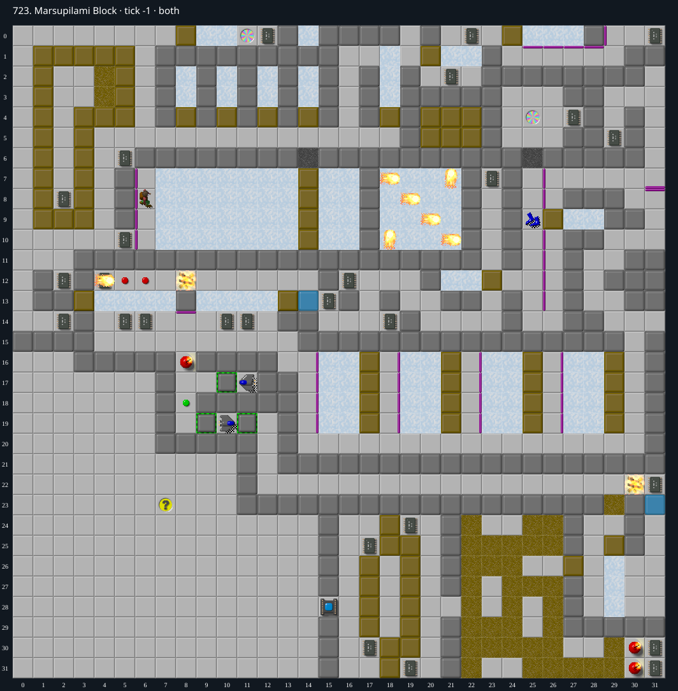

Jacques · Original Tile World MS
723. Marsupilami Block
Under investigationA native-verified partial route collects 40 of 54 chips. The first ice-block gate and central bomb passage are open, but no winning replay or impossibility proof is established.
54 chips required · 300 second time limit
This is an incomplete investigation. An unsuccessful attempt or bounded search is not evidence that a level is impossible.
Findings so far
- The preserved partial route is alive at tick 2136 with Chip at (30,20), 40 chips collected and 14 remaining. All 2,137 steps match between the TypeScript replay and native Tile World MS trace.
- The first block gate is reversible. Push the block from (20,1) onto the ice, circle underneath it, and push north at tick 578 as it returns to (21,1). It parks at (21,0). Chip can then use the lower loop through (21,2), (22,2) and (22,1) to collect (22,0) and return to the left side.
- The central bomb at (8,16) can be cleared. Enter the middle clone corridor, wait for a fresh block at (11,13), extract it south, push it west along row 15, and push it down into the bomb. This opens the lower rooms.
- The partial route also collects all sixteen chips beneath the ice-grid blocks at x=17,21,25,29 and y=16..19. Push west on a tick congruent to 2 modulo 4, then retreat east on the next eligible input poll, before the sliding block returns.
- An alternate early prefix collects the upper dead-end chip at (29,5) and returns to (30,8) at tick 836, before opening the central passage allows a fireball into the glider corridor. Its 837 steps also match native Tile World exactly. This alternate prefix has not been joined to the longer 40-chip route.
- The second upper block gate remains unresolved. Its block starts over the chip at (24,0), slides along (25..27,0), and bounces off the wall at (28,0). The route to the chip at (31,0) descends to row 1 and comes up at (29,0); the returning block closes (24,0) before the tested round trip. North-facing thin walls beneath the ice prevent the same perpendicular parking move used at the first gate. Timing experiments have not established either a successful return or an invariant ruling one out.
- The other remaining areas still need constructive routes, including the right-hand bomb and block room. No conclusion of impossibility follows from the remaining chips or unsuccessful local timing trials.
Inspect both layers
The main map shows the initial runtime state. Switch to the buried layer to inspect hidden terrain and items. Hover coordinates are also available in the downloadable SVG.


Recorded checks and attempts
- full-trace partial route: Playing; exact TypeScript/native trace parity through all 2,137 steps.
- early upper-room ordering: Collected (29,5) and returned to (30,8); exact native parity through all 837 steps.
Scope and limitations
- These are partial input fixtures, not winning TWS files. The two successful prefixes are separate routes and cannot be concatenated without accounting for actor timing.
- No complete impossibility argument is claimed. Bounded local searches cover selected routes and timing windows only.
- Native verification refers to the original Tile World MS implementation. These partial routes were not independently verified in CHIP.EXE or SuCC.